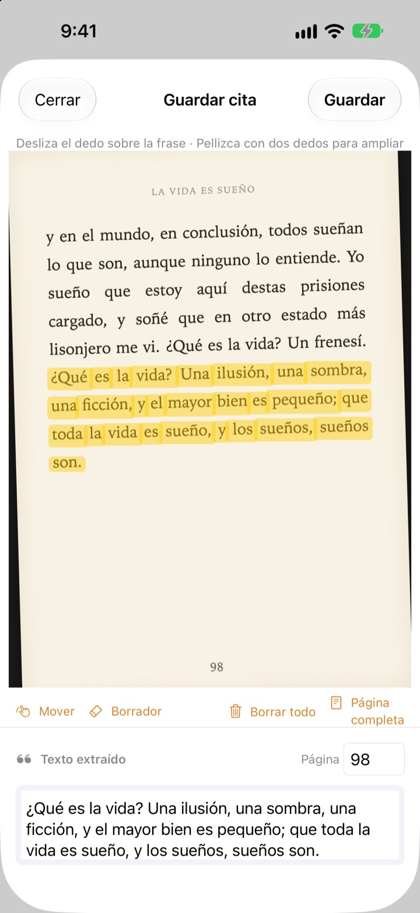
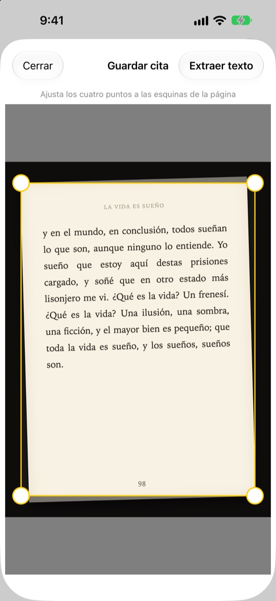
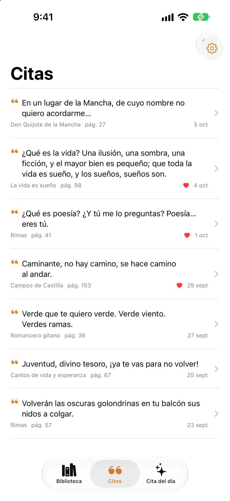
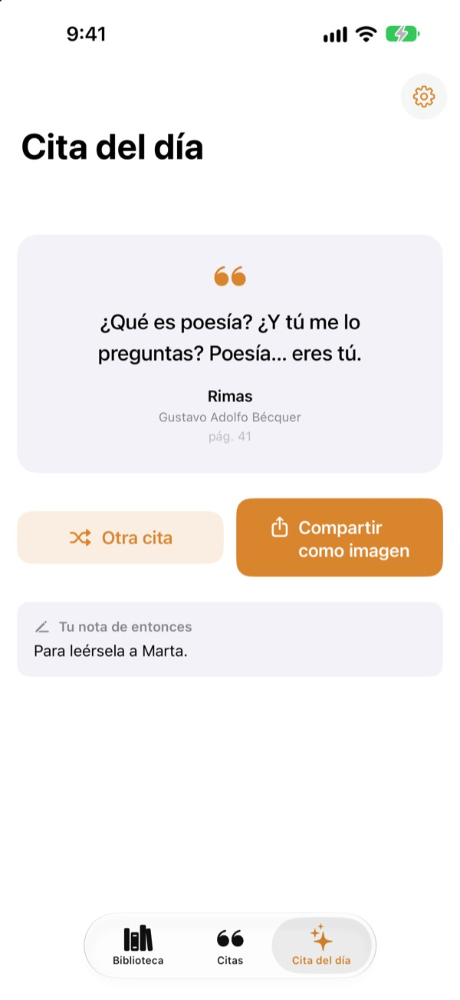

Subraya un libro
sin bolígrafo
Haz una foto de la página, pasa el dedo por la frase que te gusta y solo esa frase se guarda como texto. El libro y el número de página van con ella.
Todas las funciones son gratis y sin anuncios.

Pruébalo
Pasa el dedo o el ratón por cualquier frase de la página de abajo. Solo las palabras por las que pases llegan a la tarjeta.
¿Dónde acaban las frases buenas?
El libro es de la biblioteca, así que no puedes subrayarlo. La foto de la página se pierde entre miles en la fototeca. Si la copias en una app de notas, el título y la página casi nunca la acompañan. Bookmark Shot guarda la frase, el libro y la página con dos gestos: haces la foto y pasas el dedo.
Foto torcida, página recta
Tras hacer la foto, ajusta las cuatro esquinas y hasta una página fotografiada de lado queda plana como una hoja. Letras más nítidas, mejor reconocimiento.
También sirven las fotos que ya tienes en la fototeca.

Todas tus citas en un solo lugar
Tus libros se ordenan en una biblioteca de portadas y tus citas se reúnen en una sola lista. Busca por frase, nota o título del libro, y marca con un corazón las que quieras releer.
Añade un libro con una sola foto de la portada. Se leen el título y el autor, y también el ISBN si se ve el código de barras de la contraportada.

Reencuéntrate con frases olvidadas
La cita del día te trae cada día una de tus citas guardadas, junto con la nota que dejaste. Tenla en la pantalla de inicio o en la pantalla bloqueada con un widget.
¿Te encanta? Conviértela en una tarjeta con aspecto de papel y compártela.

Empieza en tres pasos
- 1
Fotografía la portada
Se rellenan el título y el autor. Puedes editarlos antes de guardar.
- 2
Fotografía la página
Ajusta las cuatro esquinas y se endereza.
- 3
Subraya la frase
El número de página se detecta y se guarda con ella.
Herramientas de la pantalla de subrayado
- Deslizar el dedo
- selecciona solo las palabras por las que pasas
- Pellizcar
- amplía para subrayar con más precisión
- Mover
- desplaza la página ampliada
- Borrador
- quita palabras ya subrayadas
- Borrar todo
- elimina todas las palabras seleccionadas
- Página completa
- conserva todo el texto de la página
- Campo de página
- el número de página detectado, editable
Con VoiceOver, toca dos veces una línea para añadirla o quitarla.
Todas las funciones son gratis
Gratis
- Añadir libros por la portada, ISBN por el código de barras
- Enderezado de páginas y subrayado con el dedo
- Número de página automático
- Biblioteca, búsqueda de citas y favoritas
- La cita del día con widgets para la pantalla de inicio y la pantalla bloqueada
- Compartir como tarjeta
- Sincronización con iCloud
Apoya al desarrollador
- Deja una pequeña propina desde Ajustes, si te apetece
- Las propinas no desbloquean nada. La app es la misma
Sin anuncios ni suscripciones.
Preguntas
¿Se envían mis fotos o mis citas a algún sitio?
No. El reconocimiento de texto se hace íntegramente en tu dispositivo con Apple Vision, y tus fotos y citas nunca van a un servidor. También funciona sin conexión. Consulta la política de privacidad más abajo para más detalles.
¿Qué idiomas puede leer?
El reconocimiento de texto lo hace iOS en tu dispositivo. Lee libros en coreano, inglés, japonés, chino, ruso y la mayoría de las lenguas de Europa occidental, y en las versiones recientes de iOS también en tailandés, vietnamita, turco, indonesio, polaco, checo, neerlandés y las lenguas nórdicas. Todavía no reconoce el griego.
¿Cómo elijo solo la frase que quiero?
Después de hacer la foto, pasa el dedo por la frase como si usaras un rotulador fluorescente y solo se seleccionan esas palabras. Pellizca para ampliar y ganar precisión. También tienes el borrador, «Borrar todo» y «Página completa».
El título o el autor salen mal.
El reconocimiento de la portada se guía por el tamaño de las letras, así que puede equivocarse con portadas muy decoradas. Puedes corregir el título y el autor antes de guardar el libro.
El número de página no es correcto.
Se lee de los números del borde de la foto. Corrígelo en el campo de página antes de guardar.
¿Puedo ver mis citas en varios dispositivos?
Sí. Si has iniciado sesión en iCloud con la misma cuenta de Apple y tienes activado iCloud Drive, tus libros y citas se sincronizan solos.
¿Cómo añado el widget?
Mantén pulsada la pantalla de inicio, toca Editar > Añadir widget y elige Bookmark Shot. Para la pantalla bloqueada, mantenla pulsada y toca Personalizar. Ahí aparecerá la cita del día.
La cámara no funciona.
Comprueba en Ajustes > Bookmark Shot que está permitido el acceso a la cámara y a las fotos. Para hacer fotos hace falta un iPhone de verdad.
¿Qué necesito?
Un iPhone con iOS 17.0 o posterior.
¿Cómo puedo contactaros?
Envíanos tus comentarios desde la pantalla Ajustes (rueda dentada) de la app o escríbenos al correo de abajo. Solemos responder en dos o tres días.
¿Preguntas o comentarios? Escribe a leeo@kakao.com.